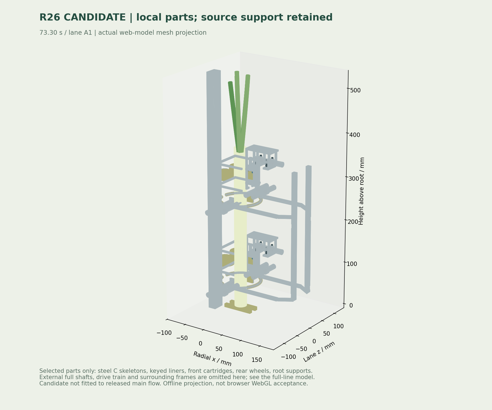

让粗细有余量，
让承重有依据。
双导杆约束软压块转动，独立压簧适应两侧偏心；闭合防脱笼与根托分别承担包围和根端承重。翻平阶段的横向正承托尚未完成，本页始终禁止候选源夹具释放。换装采样仍发现与原夹具的接触，失败记录保留，尚未放行。
正在核对候选许可…
同源 CAD 机构
正在创建三维…载入几何…
4个钢骨变体、独立软压块、双导杆、衬套、压簧、M3孔/螺钉/垫圈、M12名义螺纹后盖与封闭杆罩。浅灰轴为原旋转托座空间参考；完整外部轴系和支架见整线。此页为待验候选，不能用于制造放行。

上图为250mm高度的尺寸投影。三维不可用时，投影仍可操作；投影不作为三维视觉验收。
夹得住，需要载荷和实料一起证明。
根托在直立时承重。翻平后，重量和加速度含有垂直于葱轴的分量，当前候选需要依靠压块摩擦或增加正承托。下表按质点轨迹给出必要条件；没有计入接触力矩、叶片摆动或局部压强。
摩擦系数与载荷系数是用户可调的设计假设，未经过湿葱试验。即使标量容量通过，也不能解除横向承托、整线碰撞和实料的未完成项。
能核对到哪里，记录到哪里。
检查记录载入中…
原料自动上料、旋转去皮/风刀、自动供膜、检重与框体输出仍在主页。候选尚未替换主夹具；整线变径/弯曲许可也未放开。